驱动开发-pinctrl与gpio子系统
pinctrl子系统
i.MX 芯片（以及很多其他 SoC）面临的一个根本问题：芯片的引脚（PAD）数量有限，但内部功能模块（如 USDHC, UART, I2C, GPIO 等）非常多。为了解决这个矛盾，芯片设计引入了 IOMUX Controller (IOMUXC)。
- IOMUXC (I/O Multiplexer Controller)：
- 功能：它是一个硬件控制器，允许一个物理引脚（PAD）被复用到多个内部功能模块上。
- 工作方式：通过寄存器配置，为每个引脚选择 up to 8 种不同的工作模式（ALT modes，即 Alternate Function 复用功能）。例如，一个引脚可以被配置为 GPIO1_IO00、UART1_TXD 或 I2C1_SDA 等功能。
- 额外控制：除了选择功能，IOMUXC 还控制每个引脚的电气特性，如上拉/下拉电阻、驱动强度、转换速率等。这被称为 Pad Settings。
我们需要在设备树中设置PIN的信息，在imx6ull.dtsi文件中，找到iomuxc的节点，iomuxc 节点就是I.MX6ULL的IOMUXC 外设对应的节点：
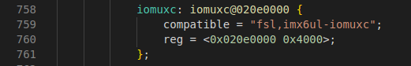
在imx6ull-alientek-emmc.dts中，找到&iomuxc 就是向iomuxc 节点追加数据，不同的外设使用的PIN 不同、其配置也不同：
pinctrl-names标识，指定PIN 的状态列表，默认设置为default 。
pinctrl-0= <&pinctrl_hog_1>的意思的在默认设置下，将使用pinctrl_hog_1 这个设备节点来设置GPIO 端口状态:
pinctrl-names：定义引脚状态。
•pinctrl-0：定义第0 种状态需要使用到的引脚配置，可引用其他节点标识。
•pinctrl-1：定义第1 种状态需要使用到的引脚配置。
•pinctrl-2：定义第2 种状态需要使用到的引脚配置。
工作内容
Linux 驱动讲究驱动分离与分层，驱动分离与分层其实就是按照面向对象编程的设计思想而设计的设备驱动框架，
pinctrl子系统：
①获取设备树中pin 信息。
②根据获取到的pin 信息来设置pin 的复用功能
③根据获取到的pin 信息来设置pin 的电气特性，比如上/下拉、速度、驱动能力等。
只需要在设备树里面设置好某个pin 的相关属性即可，其他的初始化工作均由pinctrl 子系统来完成，pinctrl 子系统源码目录为drivers/pinctrl。
引脚配置节点
fsl,pins： 这是最核心的属性。它是一个数组，每个条目用 6 个整数 来描述一个引脚的所有设置。
- 文档中的定义：
<mux_reg conf_reg input_reg mux_val input_val CONFIG> - 实际使用/宏定义：
<PIN_FUNC_ID CONFIG>（如示例中的MX6QDL_PAD_SD4_CMD__SD4_CMD 0x17059）
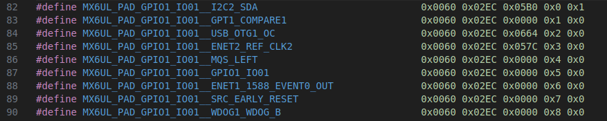
6 个整数：
mux_reg： IOMUXC 中选择引脚功能的寄存器的偏移地址。conf_reg： IOMUXC 中配置引脚电气特性的寄存器的偏移地址。input_reg： 如果所选功能需要从某个特定的 GPIO 输入寄存器读取数据，这个就是那个输入寄存器的偏移地址。很多功能不需要，则为 0。mux_val： 要写入mux_reg寄存器的值，用于选择具体的复用模式（ALT0-ALT7）。input_val： 要写入input_reg寄存器的值（如果需要）。CONFIG： 要写入conf_reg寄存器的值，用于配置引脚的电气特性。这是我们最常需要修改的值。
PIN_FUNC_ID 宏（例如 MX6QDL_PAD_SD4_CMD__SD4_CMD）的作用就是自动生成前 5 个整数。 你在 imx6q-pinfunc.h 等头文件中找到的宏，展开后就是这 5 个数字。这极大简化了设备树的编写。
**CONFIG 值的位定义：**这是配置电气属性的关键
电气属性
常用到的配置电气属性包括：压摆率，速度，驱动能力，开漏，上下拉等。
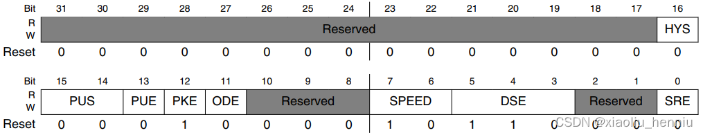
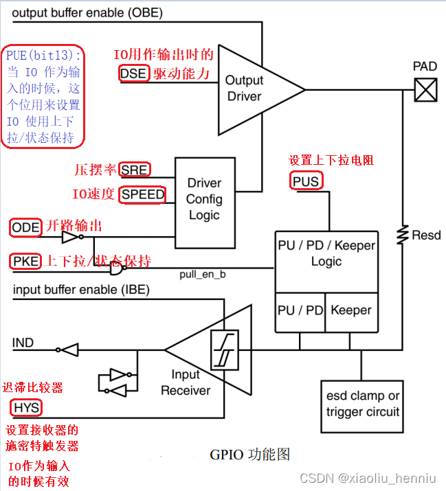
SRE(bit0)： 对应图中的 SRE，设置压摆率，当此位为 0 的时候是低压摆率，当为 1的时候是高压摆率。这里压摆率就是 IO 电平跳变所需要的时间，比如从 0 到 1 需要多少时间，时间越小波形就越陡，说明压摆率越高；时间越长波形就越缓，压摆率就越低。如果你的产品要过 EMC 的话那就可以使用小的压摆率，因为波形缓和，==如果使用 IO做高速通信的话就可以使用高压摆率==。（SPI通信）
**DSE(bit5:3)：**对应图中的 DSE，当 IO 用作输出的时候用来设置 IO 的驱动能力，总共有 8 个可选选项，如下表：
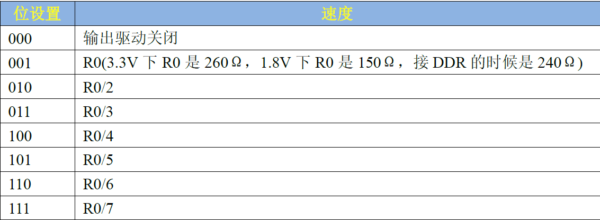SPEED(bit7:6)： 对应图中的 SPEED，当 IO 用作输出的时候，此位用来设置 IO 速度，设置如下表：
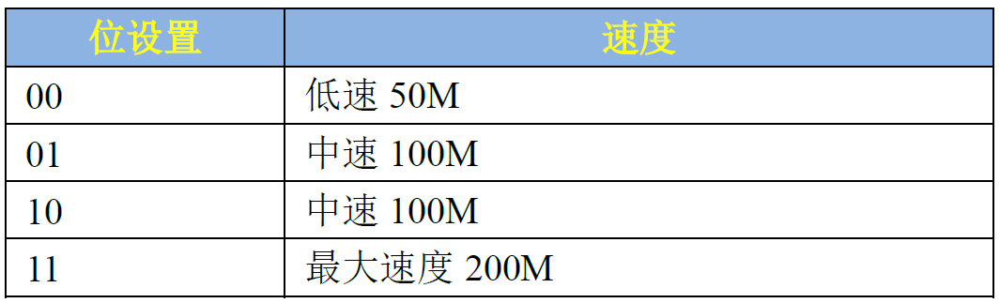**ODE(bit11)：**对应图中的 ODE，当 IO 作为输出的时候，此位用来禁止或者使能开路输出，此位为 0 的时候禁止开路输出， 当此位为 1 的时候就使能开路输出功能。
PKE(bit12)： 对应图中的 PKE，此位用来使能或者禁止上下拉/状态保持器功能，为0 时禁止上下拉/状态保持器，为 1 时使能上下拉和状态保持器。
PUE(bit13)： 图中没有没有给出，当 IO 作为输入的时候，这个位用来设置 IO 使用上下拉还是状态保持器。当为 0 的时候使用状态保持器，当为 1 的时候使用上下拉。状态保持器在IO 作为输入的时候才有用，就是当外部电路断电以后此 IO 口可以保持住以前的状态。
PUS(bit15:14)： 对应图中的 PUS，用来设置上下拉电阻的，一共有四种选项可以选择，如下表：
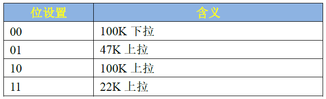
**HYS(bit16)：**对应图中 HYS，用来使能迟滞比较器，当 IO 作为输入功能的时候有效，用于设置输入接收器的施密特触发器是否使能。如果需要对输入波形进行整形的话可以使能此位。此位为 0 的时候禁止迟滞比较器，为 1 的时候使能迟滞比较器。
设备树中添加pinctrl节点模板
可以查看Documentation/devicetree/bindings/pinctrl/fsl,imx-pinctrl.txt，过程如下：
1.创建对应的节点：
同一个外设的PIN 都放到一个节点里面，在iomuxc 节点中的“imx6ul-evk”子节点下添加“pinctrl_exkey”节点。添加完成以后如下所示：
1 | pinctrl_exkey: exkeygrp { |
2.添加“fsl,pins”属性：
属性名字一定要为“fsl,pins”，因为对于I.MX 系列SOC，pinctrl 驱动程序是通过读取“fsl,pins”属性值来获取PIN 的配置信息
1 | pinctrl_exkey: exkeygrp { |
3.在“fsl,pins”属性中添加PIN 配置信息
最后在“fsl,pins”属性中添加具体的PIN 配置信息
1 | pinctrl_exkey: exkeygrp { |
至此，我们已经在imx6ull-alientek-emmc.dts 文件中添加好了设备所使用的PIN 配置信息。
如何使用，设备树与驱动的连接
当设备通过 platform_driver_register() 或类似方式注册，并且与设备树节点匹配后，内核的设备核心（Device Core）或相应的总线核心（如 Platform Bus Core）会在调用 probe 函数之前，自动执行一些准备工作。这其中就包括：自动获取设备的 pinctrl 句柄，并默认选择名为 “default” 的状态。
相应的API
如果设备的不同性能模式动态切换引脚配置，例如：
1 | &usdhc2 { |
这三个 pinctrl_usdhc1_* 配置组的主要区别在于写入 IOMUXC 配置寄存器（CONFIG 值）的那些电气参数：
| 状态名 | 目标时钟频率 | 典型配置差异 (以 i.MX 为例) |
|---|---|---|
default |
~25 MHz 或更低 | 保守设置：较低的驱动强度，慢的压摆率。功耗低，噪声小，足够满足低速通信。 |
state_100mhz |
~50-100 MHz | 平衡设置：增加驱动强度，可能启用压摆率控制。以应对更高的频率和更短的信号建立时间。 |
state_200mhz |
~200 MHz | 激进设置：使用最高驱动强度，启用更快的压摆率（如果稳定），特别注意终端匹配。旨在克服高速带来的信号完整性问题。 |
Linux pinctrl 子系统为驱动开发者提供了一套 API，主要定义在 include/linux/pinctrl/consumer.h 中。最常用的函数有以下几个：
如果需要更精细的控制（例如，在非 PM 上下文中切换状态），可以使用以下基本函数：
struct pinctrl *pinctrl_get(struct device *dev);- 作用： 获取该设备的 pinctrl 句柄。通常不需要直接调用，因为
pinctrl_lookup_state内部会处理。
- 作用： 获取该设备的 pinctrl 句柄。通常不需要直接调用，因为
void pinctrl_put(struct pinctrl *p);- 作用： 释放 pinctrl 句柄。与
pinctrl_get配对使用。
- 作用： 释放 pinctrl 句柄。与
struct pinctrl_state *pinctrl_lookup_state(struct pinctrl *p, const char *name);- 作用： 通过状态名（如
"state_100mhz"）查找对应的 pinctrl 状态句柄。 - 参数：
p是 pinctrl 句柄，name是设备树里pinctrl-names中定义的状态字符串。
- 作用： 通过状态名（如
int pinctrl_select_state(struct pinctrl *p, struct pinctrl_state *state);- 作用： 执行引脚状态切换的核心函数。它将新的配置应用到硬件上。
- 参数：
p是 pinctrl 句柄，state是pinctrl_lookup_state返回的状态句柄。
1 |
|
gpio子系统
工作内容
GPIO 子系统通过在底层硬件差异和上层驱动程序之间建立一个抽象层，来达成：
- 对驱动开发者：提供一套统一、稳定、跨平台的 API 来控制 GPIO。开发者无需关心当前使用的是哪款 SoC，写出的 GPIO 控制代码都是通用的。
- 对内核整合者：要求芯片厂商提供符合 GPIO 子系统标准的驱动（即 GPIO Chip Driver），将自家芯片的 GPIO 硬件操作“翻译”成标准接口。
设备树分析
我们在imx6ull.dtsi中找到名为“gpio1”的节点
1 | gpio1: gpio@0209c000 { |
gpio1节点信息描述了GPIO1控制器的所有信息，重点就是GPIO1外设寄存器基地址以及兼容属性。我们可以通过查看文档Documentation/devicetree/bindings/gpio/ fsl-imx-gpio.txt。
gpio1节点的compatible属性有两个，分别为“fsl,imx6ul-gpio”和“fsl,imx35-gpio”
reg属性设置了GPIO1控制器的寄存器基地址为
0X0209C000“gpio-controller”表示gpio1 节点是个GPIO 控制器。
“#gpio-cells”属性和“#address-cells”类似，#gpio-cells 应该为2，表示一共有两个cell，
- 第一个cell 为GPIO 编号，比如“&gpio1 3”就表示GPIO1_IO03。
- 第二个cell 表示GPIO 极性， 如果为0(GPIO_ACTIVE_HIGH) 的话表示高电平有效， 如果为1(GPIO_ACTIVE_LOW)的话表示低电平有效。
我们接着分析设备树文件imx6ull-alientek-emmc.dts，
1 | &usdhc1 { |
我们可以看到该节点的gpio信息如：cd-gpios = <&gpio1 19 GPIO_ACTIVE_LOW>;
- 属性“cd-gpios”描述了SD 卡的CD 引脚使用的哪个IO。属性值一共有三个，我们来看一下这三个属性值的含义，“&gpio1”表示CD引脚所使用的IO 属于GPIO1 组，“19”表示GPIO1组的第19号IO，通过这两个值SD 卡驱动程序就知道CD引脚使用了
GPIO1_IO19这GPIO。“GPIO_ACTIVE_LOW”表示低电平有效，如果改为“GPIO_ACTIVE_HIGH”就表示高电平有效。
通用属性
Active-HighandActive-Low以LED为例，需要设置GPIO电平。但是有些电路可能是高电平点亮LED，有些是低电平点亮LED。
可以使用如下代码：
1
2gpiod_set_value(gpio, 1); // 输出高电平点亮LED
gpiod_set_value(gpio, 0); // 输出低电平点亮LED对应同一个目标：点亮LED，对于不同的LED，就需要不同的代码，原因在于上面的代码中1、0表示的是”物理值”。
如果能使用”逻辑值”，同样的逻辑值在不同的配置下输出对应的物理值，就可以保持代码一致，比如：
1
2
3gpiod_set_value(gpio, 1); // 输出逻辑1
// 在Active-High的情况下它会输出高电平
// 在Active-Low的情况下它会输出低电平
dtsi文件，设备树中的gpio控制节点：“GPIO组”就是一个GPIO Controller
1
2
3
4
5
6
7
8
9
10gpio1: gpio@0209c000 {
compatible = "fsl,imx6ul-gpio", "fsl,imx35-gpio";
reg = <0x0209c000 0x4000>;
interrupts = <GIC_SPI 66 IRQ_TYPE_LEVEL_HIGH>,
<GIC_SPI 67 IRQ_TYPE_LEVEL_HIGH>;
gpio-controller;
interrupt-controller;
};针对gpio我们只关注两个属性：
1
2gpio-controller;
- “gpio-controller”表示这个节点是一个GPIO Controller，它下面有很多引脚。
- “#gpio-cells = <2>”表示这个控制器下每一个引脚要用2个32位的数(cell)来描述。比如可以用其中一个cell来表示那是哪一个引脚，用另一个cell来表示它是高电平有效还是低电平有效，甚至还可以用更多的cell来示其他特性。
当我们在设备树中使用的时候的格式为：
1
(diyname)-gpios = <&gpiox x xxxxx>;
例如我们使用
GPIO1_IO03的时候1
2
3
4
5// 定义LED使用的GPIO引脚：
// - &gpio1：引用GPIO控制器1
// - 3：使用该控制器的第3号引脚
// - GPIO_ACTIVE_LOW：低电平有效（高电平熄灭，低电平点亮）
led-gpio = <&gpio1 3 GPIO_ACTIVE_LOW>;
接口函数
gpio子系统有两套接口函数，新版的是使用struct gpio_desc结构体来表示一个引脚，驱动中需要包含头文件
1 |
GPIO获取函数
| 函数原型 | 参数 | 作用 | 使用场景 |
|---|---|---|---|
struct gpio_desc *gpiod_get(struct device *dev, const char *con_id, enum gpiod_flags flags) |
dev: 设备指针 con_id: GPIO标识符 flags: 配置标志 |
获取单个GPIO描述符 | 基础GPIO控制 |
struct gpio_desc *gpiod_get_index(struct device *dev, const char *con_id, unsigned int idx, enum gpiod_flags flags) |
idx: GPIO索引号 |
获取指定索引的GPIO | 设备树中多个同名GPIO |
struct gpio_descs *gpiod_get_array(struct device *dev, const char *con_id, enum gpiod_flags flags) |
参数同gpiod_get | 获取GPIO数组 | LED矩阵/按键阵列 |
struct gpio_desc *devm_gpiod_get(struct device *dev, const char *con_id, enum gpiod_flags flags) |
参数同gpiod_get | 自动管理资源的GPIO获取 | 设备驱动中推荐使用 |
devm_gpiod_get_index(struct device *dev,const char *con_id,unsigned int idx,enum gpiod_flags flags) |
- | 自动管理的索引GPIO | 多GPIO设备 |
devm_gpiod_get_array(struct device *dev, const char *con_id, enum gpiod_flags flags) |
- | 自动管理的GPIO数组 | 资源敏感的复杂设备 |
参数的意义：
dev- 类型：
struct device * - 含义：关联的设备指针，通常由平台驱动或设备树提供。
- 作用：用于查找设备树中与该设备关联的 GPIO 资源。
- 示例：
&pdev->dev（在平台驱动probe函数中）。
- 类型：
con_id- 类型：
const char * - 含义：
con_id参数的全称是 “consumer ID”，它的作用是告诉 GPIO 子系统：“我要获取这个设备节点中，哪个特定用途的 GPIO。” - 作用：匹配设备树中
gpios属性的name字段。- 它会在设备节点的属性中寻找一个名为
{con_id}-gpios的属性。 - 如果你的
con_id是"cd"，它就会去寻找名为cd-gpios的属性。 - 如果你的
con_id是"wp"，它就会去寻找名为wp-gpios的属性。 - 如果你的
con_id是NULL，它会默认去寻找名为gpios的属性（没有前缀）
- 它会在设备节点的属性中寻找一个名为
- 示例：
- 设备树中定义：
led-gpios = <&gpio1 3 GPIO_ACTIVE_HIGH>; con_id应为"led"（若设备树中使用led-gpios或gpios）。
- 设备树中定义：
- 类型：
flags类型：
enum gpiod_flags含义：GPIO 的初始化标志，用于配置方向、上下拉、驱动能力等。
可选值：
方向标志
GPIOD_IN：配置为输入。GPIOD_OUT_LOW：配置为输出，默认低电平。GPIOD_OUT_HIGH：配置为输出，默认高电平。
其他标志
GPIOD_ACTIVE_LOW：反转 GPIO 极性（低电平有效）。GPIOD_OPEN_DRAIN：开漏输出模式。GPIOD_PULL_UP/GPIOD_PULL_DOWN：启用上拉/下拉电阻（部分平台支持）。
返回值：- 成功 ：返回指向
struct gpio_desc的指针（GPIO 描述符）。 - 失败 ：返回错误指针（需用
IS_ERR()检查）。
- 成功 ：返回指向
GPIO方向设置
| 函数原型 | 参数 | 作用 | 返回 |
|---|---|---|---|
int gpiod_direction_input(struct gpio_desc *desc) |
desc: GPIO描述符 |
设为输入模式 | 0成功，负错误码 |
int gpiod_direction_output(struct gpio_desc *desc, int value) |
value: 初始输出值 0：低电平（对应物理上的 GND 电压）。 1：高电平（对应物理上的 VDD 电压，如 3.3V）。 |
设为输出模式 | 同上 |
GPIO值读写
| 函数原型 | 参数 | 作用 | 注意 |
|---|---|---|---|
int gpiod_get_value(const struct gpio_desc *desc) |
- | 读取GPIO值 | 返回0/1或负错误 |
void gpiod_set_value(struct gpio_desc *desc, int value) |
value: 输出值 0：低电平（对应物理上的 GND 电压）。 1：高电平（对应物理上的 VDD 电压，如 3.3V）。 |
设置GPIO输出 | 需先设为输出 |
GPIO释放函数
| 函数原型 | 参数 | 作用 | 适用对象 |
|---|---|---|---|
void gpiod_put(struct gpio_desc *desc) |
desc: GPIO描述符 |
释放单个GPIO | gpiod_get获取的 |
void gpio_free(unsigned gpio) |
gpio: 全局编号 |
旧版释放方式 | 不推荐使用 |
void gpiod_put_array(struct gpio_descs *descs) |
descs: GPIO数组 |
释放整个数组 | gpiod_get_array |
void devm_gpiod_put(struct device *dev, struct gpio_desc *desc) |
dev: 关联设备 |
自动管理释放 | devm_gpiod_get |
void devm_gpiod_put_array(struct device *dev, struct gpio_descs *descs) |
GPIO 中断
1 | int gpiod_to_irq(const struct gpio_desc *desc); |
编写步骤
①查看需要使用的gpio引脚：
当我们需要使用led灯的时候，打开IMX6ULL_ALPHA_V2.4(底板原理图).pdf文件，查看LED0的引脚口–GPIO3，再打开IMX6ULL_CORE_V2.0(核心板原理图).pdf查看核心芯片的引脚对应图,找到GPIO3对应的服用引脚为：GPIO1_IO03/I2C1_SDA/GPT1_COMPARE3/USB_OTG2_OC/USDHC1_SD_B/UART1_RX
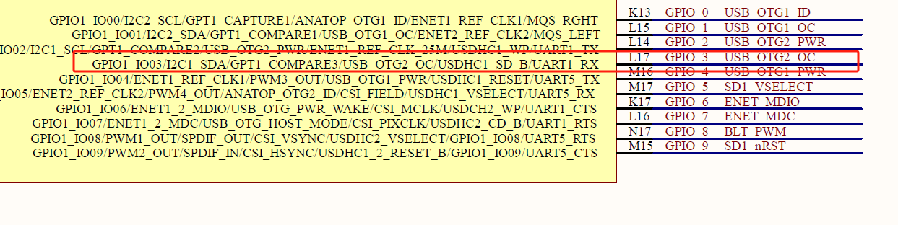
②打开imx6ul-pinfunc.h文件，找到对应的复用引脚信息，选择我们使用的复用功能，引脚配置信息：
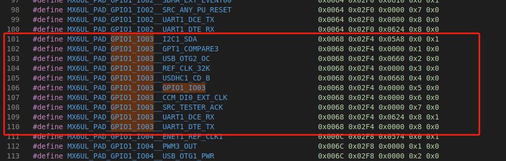
MX6UL_PAD_GPIO1_IO03__xxx命名的宏定义共有10 个，之前我们讲过引脚复用功能选择寄存器，很容易联想到这8 个宏就是用来定义MX6UL_PAD_GPIO1_IO03引脚的10 个复用功能。宏定义MX6UL_PAD_UART1_TX_DATA__UART1_DCE_TX 将“UART1_TX_DATA”引脚复用为UART1 的TX 引脚。每个宏定义后面有5 个参数，名字依次为mux_reg、conf_reg、input_reg、mux_mode、input_val。
1 |
|
**mux_reg**是引脚复用选择寄存器偏移地址
**mux_mode**是引脚复用选择寄存器模式选择位的值
**conf_reg **引脚（PAD）属性控制寄存器偏移地址。
**input_reg**暂且称为输入选择寄存器偏移地址。
**input_val **是输入选择寄存器的值。
③在imx6ull-alientek-emmc.dts文件中找到&iomuxc 节点，添加对应的电气属性
格式：
1 | pinctrl_自定义名字: 自定义名字{ |
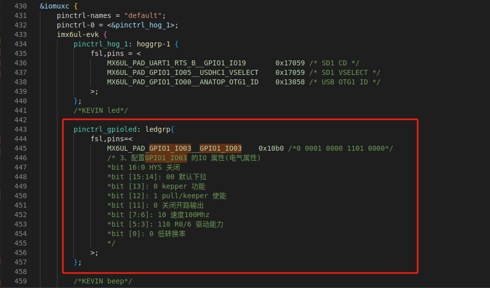
1 | pinctrl_gpioled: ledgrp{ |
④在根目录/{}下添加自己的设备树节点:
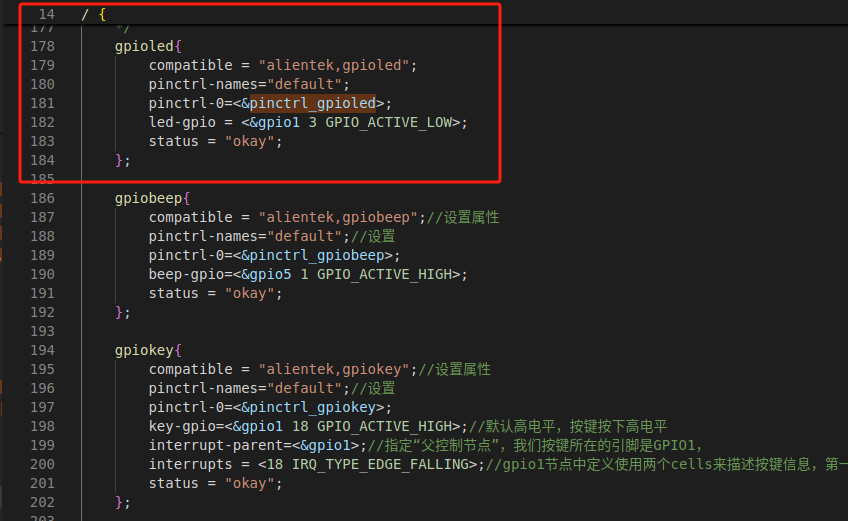
1 | / { |
led-gpio = <&gpio1 3 GPIO_ACTIVE_LOW>;
第三个参数GPIO_ACTIVE_LOW表示低电平有效，意味着当我们使用gpio_set_value(x)当参数x为1时，输出低电平；
当第三个参数为GPIO_ACTIVE_HIGH表示高电平有效，意味着当我们使用gpio_set_value(x)当参数x为1时，输出高电平；